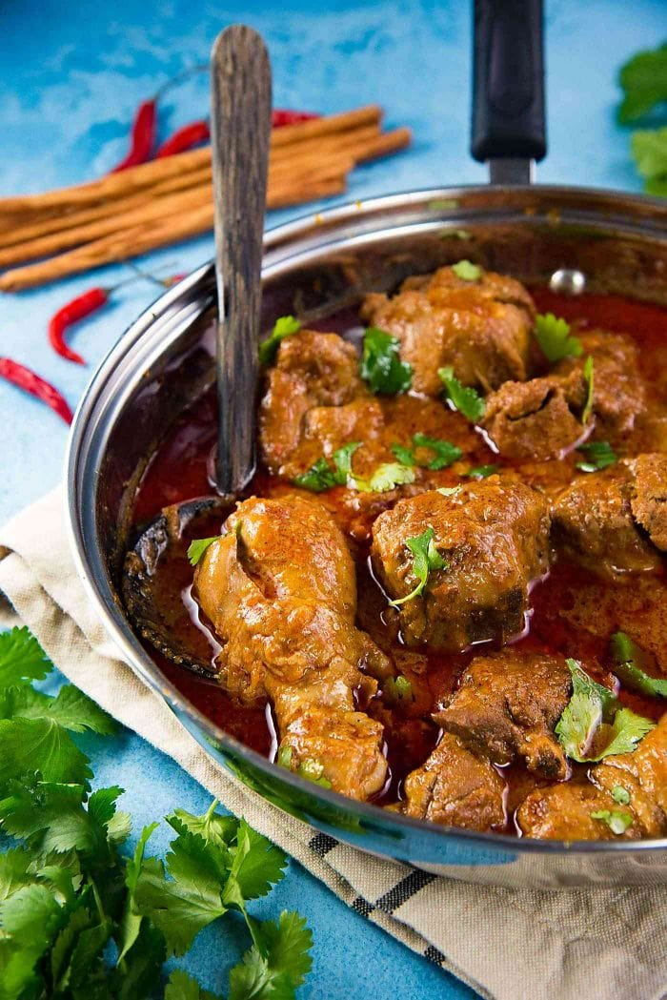

Sri Lankan Chicken Curry
This is a great starting recipe for novice cooks or those who are new to making
curries. To make it easier, you can use boneless chicken, or chicken that has
already been cut into sections.
Preparation: 15minutes minutes
Cooking: 40minutes minutes

2 – 3 tbsp coconut
oil
½ onion yellow
or red, diced or sliced.
4 garlic
cloves minced
1 inch ginger minced
6 – 7 curry
leaves or 2 bay leaves
2 ½ tbsp roasted
Sri Lankan curry powder
1 cinnamon
stick or 1 small
regular cinnamon stick
½ tsp salt plus
more to taste
1 tsp cayenne
pepper or chili powder
(less if you like it less spicy. PLEASE SEE NOTES)
1 tbsp paprika not
smoked or sweet paprika
2 lbschicken, whole
chicken cut into sections or any bone-in chicken thigh or leg pieces(large thigh pieces should be cut in half)
2 serrano
peppers (or regular green chili) cut
length-wise, with or without seeds
3 roma
tomatoes cut into
cubes (or 2 medium-sized regular tomatoes)
2 tsp brown
sugar see notes
2 tsp apple
cider vinegar PLEASE
SEE NOTES
½ cup coconut
milk PLEASE SEE NOTES
½ cup water
Add the coconut oil in to a large saucepan and heat the oil over medium
heat. Add onion, garlic, ginger to the heated oil and cook until
softened.
2 – 3 tbsp coconut oil,½ onion,4 garlic cloves,1 inch ginger
NOTE 1 – if you want a less spicy curry, you can reduce the cayenne
pepper to 1/4 – 1/2 tsp. If you like an extra spicy curry, you can add up to
2 tsp of cayenne pepper. We
like it very spicy, and add upto 2 – 3 tsp of cayenne pepper / Kashmiri
chili. Do NOT use Mexican chili powder for this curry. You
should be able to find regular chili powder or Kashmiri chili at any Asian
grocery store.
NOTE 2 – you can replace the 1/2 cup of coconut milk with water. If
you’re not adding coconut milk, this chicken curry will be spicier. The
coconut milk softens the heat.
NOTE 3 – if you want the curry to have a thicker gravy, you can reduce
the amount of liquid by half.
NOTE 4 – The sugar is added to balance the spices, and bring out the
saltiness of the curry. If you’re using a different curry powder, or you’re
making curry for the first time, add only half of the sugar initially, and
then add the rest of the sugar, if you feel like you need it at the end. I
always add both 2 tsp of sugar when I make this curry with my homemade curry
powder.